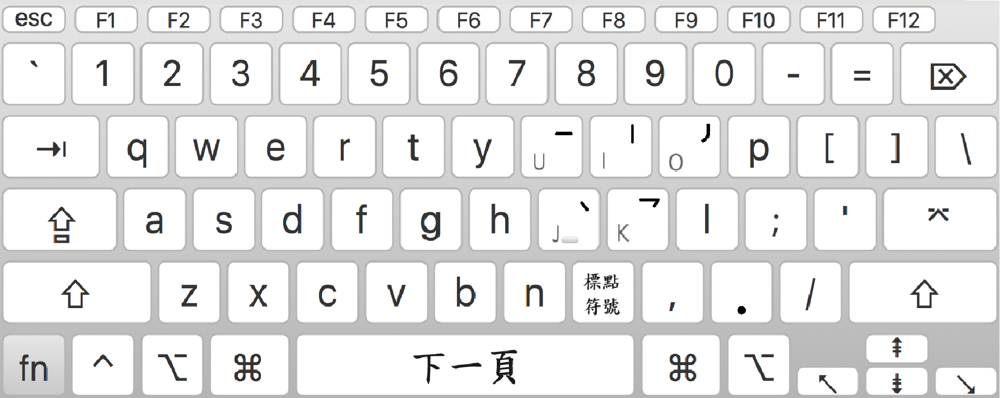

筆劃輸入法介紹
筆劃輸入法是一種根據筆順輸入相應筆劃字碼來輸入漢字的中文輸入法，是最簡單易學的一種漢字輸入法，常見於手機上。

下一頁：空白鍵
複製到剪貼板：Ctrl+C
筆劃輸入法線上版英文鍵盤／右方數字鍵盤對應筆劃字碼：
| 筆劃字碼 | 英文鍵盤 | 數字鍵盤 | 說明 |
|---|---|---|---|
| 橫（一） | U | 7 | 基本運筆方向：由左至右 |
| 豎（丨） | I | 8 | 基本運筆方向：由上至下 |
| 撇（丿） | O | 9 | 基本運筆方向：由上至左下 |
| 點（丶） | J | 4 | 基本運筆方向：由左上至右下 |
| 折（乛/乙） | K | 5 | 包含各種帶折的筆劃 |
字碼分類
此輸入法中的筆劃類似永字八法中的分類，包括橫、豎、撇、點和折。
取碼原則
所有筆劃全取。在輸入時，軟體會自動找出相關的字，所以通常不需要輸入全碼。
| 例字 | 取碼（相應數字鍵） |
|---|---|
| 口 | 丨乛一（857） |
| 合 | 丿丶一丨乛一（947857） |
| 維 | 乛乛丶丶丶丶丿丨丶一一一丨一（55444498477787） |
| 基 | 一丨丨一一一丿丶一丨一（78877794787） |
| 百 | 一丿丨乛一一（798577） |
| 科 | 丿一丨丿丶丶丶一丨（978944478） |
筆劃輸入法的優點與不足
| 優點 | 不足 |
|---|---|
| 與拼音輸入法相比，可輸入會寫但不會讀的字 | 不適合輸入會讀但不會寫的漢字 |
| 編碼鍵少，只有5個（一般都會再增加一個代表所有五類筆劃的通用萬能鍵，用於不知道某筆劃屬於哪類或忘了某筆劃怎麼寫時），手指操作簡單 | 由於編碼鍵少，部份漢字可能需要輸入較多的筆劃才能出現所需字 |
| 在如今手寫漢字機會越來越少的時代，有助於使用者鞏固和提高對漢筆劃、及漢字筆順的記憶 | 需要對每個漢字的筆順進行熟練的記憶，平時不注重漢字筆順的人用起來有一定難度 |
取碼上要注意的地方
在使用筆劃輸入法時，有幾個關鍵點需要注意：
- 字型相似，但取碼不同
- 例：「有」（一丿丿乛一一）、「冇」（一丿丨乛）
- 例：「衤」（丶乛丨丿丶）、「礻」（丶乛丨丶）
- 部首相同，但取碼不同
- 例：「雨」（一丨乛丨丶丶丶丶）、「雪」（一丶乛丨丶丶丶丶乛一一）
- 個人筆順錯誤
- 例：辵部的字（如「迫」、「還」等）應先取右邊，後取左邊；「耳」（一丨丨一一一），而非（一丨一一一丨）